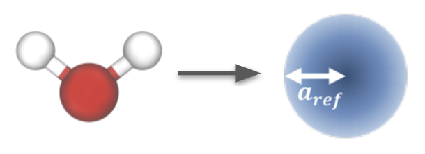

Water
Water provides a case study in understanding the main interaction model underlying simulations suitable for running field theory.
We coarse grain water using a 1 bead model:

See this notebook and the repository for example code coarse graining water at \(25^o\)C. It fixes the water smearing radius to \(a_w=0.3107\)nm \(=\rho_w^{-1/3}\), and determines a suitable repulsion strength \(u_w\).
The example code uses the sim-utils package and templates to build a system. If building a system from scratch (e.g. after following the main steps in this guide), under the hood the most critical part is constructing interaction potential and filter to use the recommended Gaussian interaction:
filter = sim.atomselect.PolyFilter([atom_type_w,atom_type_w], Bonded=False)
potential_ww = sim.potential.LJGaussian(sys, Cut = 3.0,
Filter = filter_aa_nonbond,
Epsilon = 0.0, Sigma = 1.0, B = 1.0, Kappa=1.0, Dist0=0.0,
Shift = True, Label = "LJG")
sys.append(potential_ww)
All other steps from this guide then apply, including running the optimization.